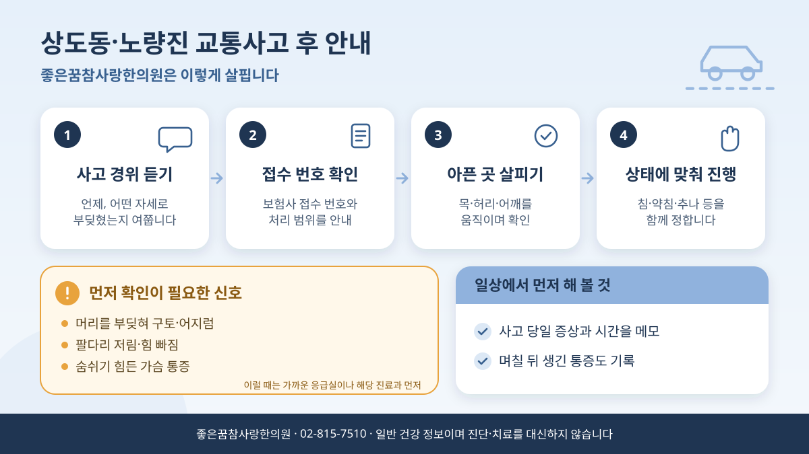
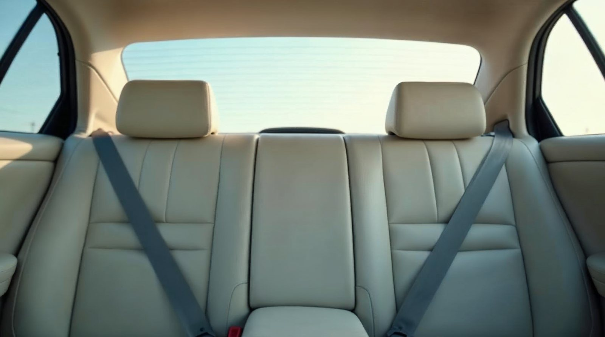
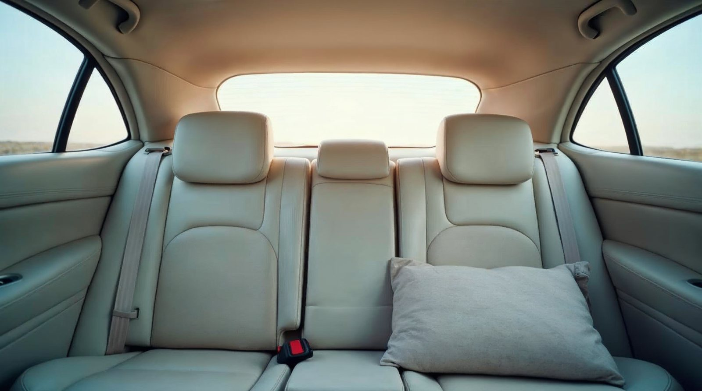
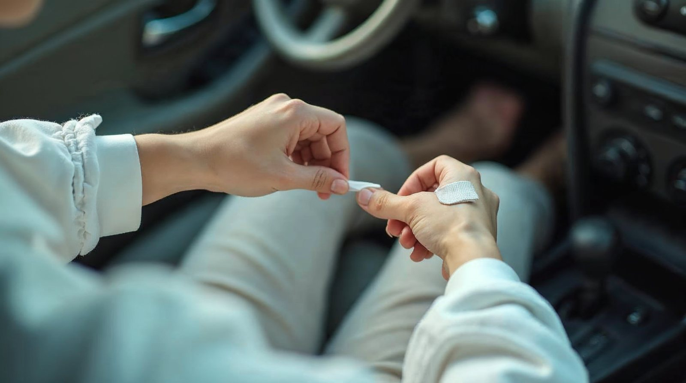

교통사고 뒤 "검사는 괜찮다는데 왜 이렇게 아프지" 싶은 분을 위한 안내예요. 좋은꿈참사랑한의원에서 저는 응급 확인이 먼저 끝났는지 여쭌 뒤, 맥을 짚으며 사고 경위와 불편한 동작, 사고 뒤 달라진 잠과 긴장까지 같이 살펴요.

검사는 괜찮다는데, 왜 이렇게 아플까요
신호를 기다리다 뒤에서 '쿵' 하고 받힌 날을 떠올려 볼게요. 차에서 내려 상대 운전자와 얘기하고, 보험사에 전화하고, 사진을 찍는 동안에는 아픈 줄도 몰라요. 그날 밤은 그냥 좀 놀랐다고만 생각하고 잠자리에 드시죠. 그런데 다음 날 아침, 고개를 돌리려는데 뒷목이 뻣뻣하고 머리가 띵합니다. 사흘쯤 지나면 앉았다 일어설 때 허리까지 묵직해지고요.
진료실에서 이런 말씀을 정말 자주 들어요. "병원에서 사진 찍었는데 괜찮대요. 그런데 왜 이렇게 아프죠?" 이상이 없다는 말에 안심이 되면서도, 내 몸은 분명히 불편하니 마음 한구석이 더 답답해지시죠. 꾀병처럼 보일까 봐 가족에게도 말을 못 하고 참는 분도 계세요. 그런 얘기를 들으면 저는, 사고 그 자체보다 그 뒤 며칠을 혼자 견디신 시간이 더 길고 힘드셨겠구나 싶어요.
엑스레이는 주로 뼈를 봐요. 근육과 인대 같은 연부조직이 다친 건 엑스레이에 잘 안 보일 수 있거든요. 게다가 사고 당시에는 몸이 긴장해서 통증을 덜 느끼다가, 다음 날이나 며칠 뒤에 목·어깨·허리가 아파 오는 경우가 많아요. 원래 그래요. 그러니 "검사는 괜찮다는데"와 "그래도 아프다"는 서로 부딪히는 말이 아니에요. 둘 다 그대로 들어야 할 말이에요.
그래서 저는 순서를 분명히 하고 싶어요. 먼저 응급실에서 확인해야 할 신호가 없는지 봐요. 그다음에 남은 불편을, 사고 경위와 몸이 움직이는 모양, 그리고 사고 뒤 달라진 잠과 마음까지 같이 살피는 거예요. 상도역 근처에서 출퇴근하시는 분도, 노량진에서 버스를 타고 오시는 분도 이 순서는 같아요.
이런 신호가 있으면 가까운 응급실이 먼저입니다
사고 뒤 이야기를 길게 하기 전에 이것부터 말씀드립니다. 아래 가운데 하나라도 있으면 이 글을 더 읽기보다 바로 가까운 응급실을 찾으셔야 합니다. 사고 당일에는 괜찮다가 며칠 지나 새로 생겨도 마찬가지입니다.
피를 묽게 하는 약을 드시는 분이나 어르신은 작은 충격에도 더 조심스럽게 살펴야 합니다. 처음 검사가 괜찮았더라도 두통이 줄지 않고 날이 갈수록 심해진다면 다시 확인을 받으세요. 곁에 있는 가족도 이 신호를 같이 알아 두시면 좋겠습니다.
- 의식을 잃었거나 사고 전후 기억이 끊긴 경우
- 두통이 점점 심해지거나 구토가 되풀이되는 경우
- 팔다리가 저리거나 힘이 빠지고, 그 범위가 넓어지는 경우
- 말이 어눌해지거나 시야가 흐려지고 겹쳐 보이는 경우
- 숨쉬기 힘들거나 가슴·배가 아픈 경우, 뼈가 부러진 것 같은 경우
사고 뒤 며칠 동안 흔히 느끼시는 것
충돌하는 순간 목은 생각보다 크게 앞뒤로 흔들려요. 특히 뒤에서 부딪힌 사고에서는 머리 무게를 받치던 목과 어깨 근육이 놀라서 확 굳었다가, 그 긴장이 며칠씩 남기도 하거든요. 뒷목에서 시작해 머리 뒤쪽과 관자놀이까지 조이듯 아프다고 하시는 분이 많아요.
몸만 놀라는 게 아니에요. 자다가 브레이크 소리에 놀라 깨고, 사고 장면이 자꾸 떠오르고, 운전석에 앉으면 손에 땀이 난다는 분도 계세요. 잠이 얕아지면 통증을 더 크게 느끼고, 아프면 또 잠이 안 와요. 이런 변화도 사고 뒤에 생길 수 있는 일이니까, 몸 얘기와 같이 편하게 말씀해 주세요.
가벼운 접촉 사고였다고 넘기시는 분도 많아요. 노량진로나 상도로처럼 차가 많은 길에서 천천히 가다 살짝 부딪힌 정도라면 더 그렇죠. 그래도 사고 직후 괜찮아 보였던 몸이 며칠 사이 달라질 수 있으니, 그 며칠 동안의 변화를 지켜보고 적어 두셨으면 해요. 별일 없으면 그걸로 다행이고, 불편이 생기면 그 기록이 얘기의 시작이 되거든요.
- 고개를 돌릴 때 목 뒤가 당기고 머리가 띵함
- 앉았다 일어설 때 허리가 묵직하게 아픔
- 누웠다 일어날 때 잠깐 휘청하는 어지럼
- 잠을 설치거나 운전대를 다시 잡기 두려운 마음
통증과 후유증은 조금 다릅니다
사고 얘기를 다 듣고 나면 저는 이렇게 말씀드리곤 해요. 제가 같이 살피고 싶은 건 '사고 통증'보다 '사고 후유증'이라고요. 어딘가에 딱 부딪혀 멍이 들고 그 자리가 아픈 것, 이건 통증이에요.
그런데 좀 쉬고 나니 덜한 것 같다가 다시 아프고, 허리를 살피는 사이 어깨가, 그다음엔 팔꿈치와 무릎이 차례로 불편해진다면 얘기가 달라져요. 저는 이런 흐름을 후유증이라고 설명드려요.
후유증은 사고가 계기가 됐지만, 사고 전부터 몸에 있던 약한 곳이 같이 흔들리면서 생기는 경우가 많아요. 사고와 원래의 몸 상태가 섞여 있는 셈이죠.
같은 사고라도 아이들은 크게 부딪히고도 비교적 가볍게 지나가는 경우가 있고, 어르신들은 살짝 스친 정도에도 여러 곳이 오래 불편하신 경우가 있는 것도 그래서예요.
젠가 놀이를 떠올려 보시면 쉬워요. 블록을 여러 개 빼내서 이미 비틀비틀한 탑은 하나만 더 빼도 와르르 무너지잖아요. 오래 써 온 몸, 이곳저곳 아팠던 몸은 그 탑과 닮아서 한 번의 충격이 한 곳에 머물지 않고 여기저기로 번지기 쉬운 거예요.
사고로 다친 몸은 흔히 뼈가 부러진 골절과, 인대·근육이 늘어나거나 다친 염좌로 나눠서 얘기해요. 저는 이 둘을 이렇게 빗대어 말씀드려요. 골절은 충격이 한 자리를 꿰뚫고 지나간 거라 아픔이 그 자리에 모이고, 뼈를 맞춰 붙이는 길이 비교적 분명해요.
염좌는 충격이 몸 안으로 들어왔다가 다 빠져나가지 못한 것과 비슷해서, 그 여파가 이곳저곳에서 느껴지기 쉬워요. 뼈는 괜찮다는 말을 들었는데도 온몸이 쑤시는 까닭을 이렇게 그려 보시면 조금은 이해가 되실 거예요.
그래서 저는 사고 뒤 처음 3주 남짓을 가장 공을 들여야 할 때로 봐요. 몸이 아직 출렁이는 시기라 띄엄띄엄 오시기보다 가능하면 자주 오셔서, 그날그날 달라진 곳을 같이 살피자고 말씀드려요. 다만 몸이 회복되는 속도는 사람마다 달라서 결과를 미리 약속드리지는 않아요.
이 말씀도 꼭 덧붙여요. 출장이 있거나 퇴근이 늦어 저희 한의원에 못 오시는 날이면, 가까운 다른 의료기관에서라도 그날의 진료를 이어 가시라고요. 어디서 받느냐를 따지기보다 이 시기를 비워 두지 않는 게 먼저라고 생각하거든요.
물론 저희를 찾아 주시면 반갑게 맞을게요. 토요일과 일요일, 공휴일에도 오전 9시 30분부터 오후 3시까지 진료해요. 자동차보험으로 받을 수 있는 진료 범위와 횟수는 보험사·담당자에게 함께 확인해 주세요.
- 쉬고 나면 나아진 듯하다가 다시 아파 옴
- 한 곳을 살피는 사이 다른 곳이 차례로 불편해짐
- 사고 전부터 있던 통증이 함께 도드라짐
- 뼈는 괜찮다는데 여기저기 쑤시고 무거움
사고 모양에 따라 여쭙는 것이 조금씩 다릅니다
같은 교통사고라도 어디에 앉아 있었는지, 어느 쪽에서 부딪혔는지에 따라 몸이 받은 힘의 방향이 달라요. 그래서 저는 "사고 났어요"라는 말 다음에 그때 장면을 조금 더 그려 달라고 부탁드려요. 기억이 또렷하지 않으셔도 괜찮아요. 떠오르는 만큼만 들려주세요.
운전석에서 뒤차에 받히신 분께는 고개가 어느 쪽을 보고 있었는지, 머리받침에 머리가 닿아 있었는지 여쭤요. 뒷좌석에 타고 계셨던 분께는 안전벨트를 하셨는지, 앞좌석에 무릎이나 머리를 부딪히지는 않았는지 묻고요. 버스나 택시가 급정거해 몸이 쏠린 분이라면 서 계셨는지, 손잡이를 잡고 계셨는지가 궁금해요. 오토바이나 자전거를 타다 다치신 분께는 어느 쪽으로 넘어지셨는지, 땅을 짚은 손은 어느 쪽인지 여쭙습니다.
이런 걸 여쭙는 이유는 단순해요. 아프다고 짚으시는 곳과 그날 힘을 받은 곳이 꼭 같지는 않거든요. 목이 아파서 오셨는데 얘기를 듣다 보면, 그날 운전대를 꽉 쥐고 있던 팔과 어깨가 더 굳어 있는 경우도 있어요. 사고 순간을 다시 떠올리는 게 힘드시면 말씀해 주세요. 천천히, 나눠서 여쭐게요.
처음 오시면 이것부터 살핍니다
저는 처음 오신 분이든 다시 오신 분이든 맥부터 짚어요. 교통사고로 오셨다고 다르지 않아요. 양손을 내어 주시면 손목을 짚으면서 사고가 언제 어떻게 났는지, 어느 쪽에서 부딪혔는지, 그때 어디에 앉아 계셨는지 천천히 여쭤요.
아픈 곳만 묻지는 않아요. 사고 뒤 잠은 어떠신지, 식사는 편하신지, 몸이 차거나 뜨겁게 느껴지지는 않는지도 여쭤요. 처음엔 "목이 아파서 왔는데 왜 이런 걸 물으시나" 하실 수 있어요. 그래도 몸은 따로따로 움직이지 않거든요. 그 대답들이 지금 이분께 무엇이 먼저인지 알려 줄 때가 많아요.
그다음 고개를 돌리고 허리를 숙이는 동작을 같이 보면서 어디가 당기는지, 저림 같은 신경 증상은 없는지 확인해요. 필요하다고 판단될 때는 초음파로 근육과 힘줄 상태를 같이 보고, 의과 영상 검사가 먼저 필요해 보이면 그 순서를 말씀드려요. 그런 뒤 상태에 따라 침, 약침, 추나, 한약, 물리치료 가운데 지금 필요한 걸 설명드리고 정해요.
먼저 이렇게 여쭙니다
사고 전부터 있던 통증이 있었다면 그것도 같이 알려 주세요. 사고 뒤 새로 생긴 불편과 나눠 보는 데 도움이 돼요.
- 사고 날짜와 상황(충돌 방향, 앉은 자리)
- 응급실이나 영상검사를 받으셨나요?
- 어떤 동작에서 가장 불편하신가요?
- 보험사 사고 접수 번호가 있나요?
- 사고 뒤 잠과 기분은 어떠신가요?
첫 진료 날은 이렇게 흘러갑니다
처음 오시면 접수에서 기본 정보를 적어 주시고, 보험사 접수 번호를 알려 주시면 돼요. 다른 병원에서 받은 검사 결과나 복용 중인 약 목록이 있으면 같이 가져오시면 좋아요. 그다음 진료실에서 사고 얘기를 듣고, 맥을 짚고, 불편한 동작을 같이 확인해요. 초진은 이렇게 듣고 살피는 시간이 있어서 재진보다 조금 오래 걸릴 수 있어요.
치료에 들어가기 전에는 오늘 무엇을 왜 하는지 먼저 말씀드려요. 상태에 따라 침, 약침, 추나, 온열 장비, 물리치료를 정하고, 필요하다고 판단될 때 한약 상담을 이어 가요. 치료 중에 온도나 자세, 자극이 불편하시면 언제든 말씀해 주세요. 저희 한의원은 아파서 오시는 곳이지만, 머무시는 동안만큼은 잘 쉬다 가시는 곳이었으면 해요.
치료가 끝나면 다음 진료를 언제쯤 하면 좋을지, 그때까지 집에서 무엇을 지켜보시면 좋을지 알려 드려요. 의과 검사가 먼저 필요해 보이면 그 순서도 이때 다시 말씀드리고요. 사고 뒤 정신없는 와중에 오시는 길이니, 궁금한 건 메모해 두셨다가 그 자리에서 다 물어보셔도 돼요.
집에서 지내실 때 해 볼 수 있는 것
처음 하루 이틀은 쉬시는 게 맞아요. 다만 위험한 신호가 없다면, 내내 누워만 계시기보다 안전한 범위에서 천천히 집 안을 걷고 일상을 조금씩 이어 가시는 게 도움이 되는 경우가 많아요. 어지럼이 남아 있는 동안에는 운전, 높은 곳에서 하는 일, 혼자 하는 목욕은 피해 주세요.
그리고 하나만 부탁드려요. 기록이에요. 아픈 걸 참고 미루다 보면 기록이 비어서, 나중에 언제부터 어디가 아팠는지 설명하기 어려워질 수 있거든요. 거창할 필요 없어요. 휴대폰 메모에 하루 한 줄이면 충분해요.
- 아픈 부위와 시간대를 날짜별로 한 줄씩 적기
- 진통제를 드신 날과 횟수 적기(처방 의사와 상의할 때 필요)
- 무리한 운동과 장거리 운전은 당분간 줄이기
- 진료 기록과 영수증 모아 두기
이렇게 적어 오시면 이야기가 쉬워집니다
사고 직후에는 통증이 여러 곳으로 퍼져 느껴지기도 해요. 목도 아프고 허리도 아프고 머리도 무거워서, 어디가 제일 불편한지 스스로도 헷갈리시죠. 그럴 때 날짜별로 적어 두시면 어느 부위가 먼저 편해지고 어느 부위가 남는지가 보여요. 저도 진료 때마다 그 흐름을 같이 기록해요.
예를 들면 이 정도면 충분해요. "사고 다음 날, 고개를 왼쪽으로 돌릴 때 목 뒤 당김. 밤에 두 번 깸." "사흘째, 목은 조금 덜한데 앉았다 일어날 때 허리가 묵직함." 이 두 줄만 있어도 다음 진료에서 무엇부터 볼지 훨씬 분명해져요. 아픈 정도를 0부터 10까지 숫자로 같이 적어 두시면 더 좋고요.
- 사고 날짜·시각과 경위, 보험사에서 안내받은 내용
- 처음 불편을 느낀 날과 부위
- 지금 가장 힘든 동작과 잠의 변화
- 다른 병원 진단서와 검사 결과
운전대를 다시 잡기가 무서울 때
몸은 조금씩 움직일 만한데, 운전석에 앉기만 하면 가슴이 두근거린다는 분이 계세요. 교차로에서 옆 차가 다가오면 몸이 먼저 움찔한다고도 하시고요. 그 마음을 약하다고 여기지 않으셨으면 해요. 원래 그래요. 큰일을 겪은 몸과 마음이 아직 놀라 있는 거니까요.
저는 이런 얘기를 들으면 통증과 함께 잠과 긴장 상태를 천천히 여쭙고, 생활 리듬부터 같이 정리해 봐요. 놀란 몸이 쉬어야 마음도 따라 가라앉기 쉽거든요. 자세한 얘기는 교통사고 뒤 운전이 무섭고 장면이 떠오를 때 글에도 적어 뒀어요.
가족이 곁에서 봐 주시면 좋은 것
사고를 겪은 본인은 "괜찮아, 별일 아니야" 하고 넘기기 쉬워요. 그래서 곁에 계신 가족의 눈이 큰 힘이 돼요. 사고 뒤 며칠 동안 평소보다 자꾸 졸거나 깨우기 어려운지, 말이 어눌해지거나 같은 말을 되풀이하는지, 구토를 하는지 살펴봐 주세요. 이런 모습이 보이면 그때는 미루지 말고 가까운 응급실로 함께 가 주셔야 합니다.
그런 신호가 없다면, 가족이 해 주실 수 있는 일은 의외로 소박해요. 무거운 장보기나 아이 안아 올리기 같은 일을 며칠 대신 맡아 주시고, 날짜별 메모를 같이 챙겨 주시고, 밤에 잠을 설치는지 지켜봐 주세요. 함께 타고 있던 가족도 다쳤다면 한 분씩 따로 기록해 두시는 게 좋아요. 같은 차 안에서도 앉은 자리에 따라 아픈 곳이 다르거든요.
자동차보험 진료는 이렇게 준비하세요
좋은꿈참사랑한의원은 자동차보험 진료가 가능해요. 먼저 보험사에 사고 접수를 하고 접수 번호를 받아 두세요. 접수하실 때 번호를 알려 주시면 한의원에서 확인 절차를 안내해 드려요.
상대 차량 보험으로 진료받는지, 내 보험으로 받는지는 사고 상황에 따라 달라요. 보험 처리 범위나 기간도 보험사 기준을 따르니까, 궁금한 점은 보험사 담당자에게 같이 확인해 주세요. 준비할 게 헷갈리시면 방문 전에 02-815-7510으로 전화 주셔도 돼요.
- 보험사 사고 접수 번호와 담당자 연락처
- 응급실·영상검사 기록(있다면)
- 다른 의료기관 진료 내역(있다면)
사고가 나면 바쁜 일이 한꺼번에 몰립니다
사고 뒤 며칠은 몸보다 일이 먼저예요. 차를 정비소에 맡기고, 보험사와 통화하고, 회사에 사정을 얘기하고, 대신 탈 차편을 알아보다 보면 정작 내 몸을 돌볼 틈이 없죠. 그러다 주말이 지나고 나서야 "아무래도 안 되겠다" 하고 찾아오시는 분이 많아요.
그렇게 미루신 마음을 탓하고 싶지 않아요. 바쁘셨으니 당연해요. 다만 불편이 있다면 가까운 때에 한 번 살펴보시고, 그날부터의 변화를 남겨 두셨으면 해요. 사고 직후 괜찮다고 느껴 진료를 미루면, 나중에 생긴 불편이 사고와 이어진 건지 설명하기 어려워질 수 있거든요. 평일 저녁 8시까지, 주말과 공휴일에도 오후 3시까지 진료하는 이유 가운데 하나가 이런 분들 때문이에요.
진료는 이렇게 이어집니다
처음 오신 날 사고 상황을 자세히 들려주시면, 다음부터는 처음부터 다시 설명하지 않으셔도 돼요. 다시 오시면 저는 지난번에 가장 불편하셨던 동작부터 여쭙고, 그사이 잠은 어떠셨는지 이어서 물어요. 같은 치료를 기계적으로 되풀이하지 않고, 그날 몸 상태에 맞춰 부위와 방법을 다시 정해요. 담당 원장이 다른 날에도 이전 기록을 보고 이어서 진료합니다.
재진은 "오늘은 어떠세요?"보다 "지난번에 왼쪽으로 돌릴 때 당긴다고 하셨죠, 그건 요즘 어떠세요?"로 시작하고 싶어요. 들은 말을 기억하고 이어서 묻는 게 진료의 절반이라고 생각하거든요. 그날 맥이 지난번과 어떻게 다른지, 잠과 식사는 어땠는지도 다시 여쭙고, 남아 있는 불편을 기준으로 다음 계획을 같이 고쳐요.
진료시간은 평일 09:30~20:00(점심 13:00~14:00), 토·일·공휴일 09:30~15:00이에요. 평일 낮에 시간 내기 어려우시면 퇴근 뒤 저녁이나 주말에 들러 주세요.
상도역·노량진에서 오시는 길
좋은꿈참사랑한의원은 서울 동작구 만양로2길 2 신성빌딩 3층·5층, 상도동에 있어요. 7호선 상도역 3번 출구로 나와 약 200m 직진한 뒤 오거리에서 오른쪽으로 약 200m 오시면 돼요. 노량진역(1·9호선)에서는 3번 출구에서 마을버스 동작01을 타고 신동아리버파크에서 내리시면 됩니다.
사고 뒤에는 한동안 운전대를 잡기가 부담스러우실 수 있어요. 그럴 땐 무리해서 차를 몰고 오시기보다 지하철이나 마을버스를 이용해 보세요. 방문 전 확인할 게 있으시면 02-815-7510으로 전화 주세요. 안내해 드릴게요.
함께 읽으면 좋은 글
- 교통사고 다음 날부터 뻐근해지기 시작했어요
- 교통사고 뒤 어지럼과 두통이 계속될 때는 어떤 점을 확인하나요?
- 편타손상(채찍질 손상)은 무엇이고 어떤 때 병원을 먼저 가나요?
- 교통사고 뒤 자동차보험으로 한의원 치료를 받으려면 어떻게 진행되나요?
- 교통사고 치료 중에는 무엇을 기록해 두면 좋을까요?
상도동·노량진에서
차량이 많은 노량진로·상도로와 언덕길이 이어지는 상도동 생활권에서는 가벼운 접촉 사고 뒤 불편을 미루기 쉽습니다. 좋은꿈참사랑한의원은 상도역 3번 출구에서 약 400m, 노량진역 3번 출구에서는 마을버스 동작01번으로 오실 수 있고, 평일 저녁 8시까지 진료해 퇴근 뒤에도 들를 수 있습니다. 주차 가능 여부와 위치는 방문 전 02-815-7510으로 전화하시면 안내해 드립니다.
자주 묻는 질문
엑스레이에서 이상이 없다는데 왜 아픈가요?
엑스레이는 주로 뼈를 봅니다. 근육·인대 같은 연부조직 손상은 엑스레이에 잘 보이지 않을 수 있고, 사고 당시에는 긴장해서 며칠 뒤에 아파 오는 경우도 많습니다.
사고 뒤 아픈 곳이 여기저기 옮겨 다니는 것 같아요. 왜 그런가요?
사고 전부터 약했던 곳이 충격과 함께 흔들리면 한 곳이 나아지는 듯하다가 다른 곳이 불편해지는 흐름이 생기기도 합니다. 언제 어디가 아팠는지 날짜별로 적어 오시면 그 흐름을 함께 살핍니다. 팔다리 힘 빠짐이나 점점 심해지는 두통이 있으면 가까운 응급실을 먼저 가세요.
상도동에서 교통사고 후 한의원 진료를 자동차보험으로 받을 수 있나요?
좋은꿈참사랑한의원은 자동차보험 진료가 가능합니다. 보험사에 사고 접수를 하신 뒤 접수 번호를 알려 주시면 절차를 안내합니다. 처리 범위와 기간은 보험사에 함께 확인해 주세요.
사고 다음 날부터 아픈데 지금 가도 되나요?
네. 다만 두통이 점점 심해지거나 구토, 팔다리 힘 빠짐, 말이나 시야의 변화가 있으면 가까운 응급실을 먼저 가세요.
동승자도 진료받을 수 있나요?
동승자도 상담받으실 수 있습니다. 보험 처리 여부는 보험사 접수 내용을 확인해 주세요.
병원 치료와 한의원 치료를 같이 받아도 되나요?
다니시는 의료기관과 받은 검사·치료 내역을 알려 주세요. 함께 참고해 진료하며, 보험 처리 기준은 보험사에도 확인하시는 것이 좋습니다.
준비할 서류가 있나요?
보험 접수 번호와 응급실·영상검사 기록, 다른 의료기관 진료 내역이 있으면 가져오세요. 헷갈리시면 방문 전 02-815-7510으로 전화 주세요.
퇴근 뒤나 주말에도 진료하나요?
평일은 오후 8시까지(점심 13:00~14:00), 토·일·공휴일은 오전 9시 30분부터 오후 3시까지 진료합니다. 네이버 예약이나 02-815-7510으로 예약하세요.
사고 뒤 잠을 못 자고 운전이 무서운 것도 이야기해도 되나요?
네. 드문 일이 아닙니다. 통증과 함께 잠과 긴장, 일상의 변화도 살피며, 필요하면 전문적인 심리 지원도 안내해 드립니다.
사고가 난 지 한참 지났는데도 진료받을 수 있나요?
상담받으실 수 있습니다. 보험 처리 가능 여부는 보험사에 먼저 확인해 주세요.
교통사고 후 한약 상담도 가능한가요?
가능합니다. 진찰 후 필요하다고 판단될 때 상담하며 보험 처리 여부도 함께 안내합니다.
감수: 좋은꿈참사랑한의원 대표원장 이종호 · 마지막 확인 2026-11-27 · 일반적인 건강 정보이며 진단·치료를 대신하지 않습니다.
교통사고 후 글 모아 보기 (31편)

연세 드신 부모님을 모시고 가다 교통사고가 났는데 부모님은 괜찮다고만 하실 때, 가족은 며칠 동안 무엇을 지켜보면 좋을까요?
어르신은 사고 직후 놀람과 자녀에 대한 미안함 때문에 아픈 곳을 줄여 말씀하시는 경우가 많고, 뼈가 약하거나 혈액을 묽게 하는 약을 드시면 겉으로 드러나지 않던 손상이 뒤늦게 나타날 수 있습니다. 머리를 부딪혔거나 가슴·등·허리 통증이 있으면 먼저 병원 검사를 받고, 그 뒤 첫 사흘은 하루 두 번, 이후 몇 주는 일주일에 한두 번 두통·걸음·말·식사·잠의 변화를 가족이 같은 항목으로 확인해 기록해 두는 것이 좋습니다.
수정 2026-11-27

교통사고로 치료를 받는 중인데 헬스·달리기·골프 같은 운동은 언제, 어떻게 다시 시작하나요?
교통사고 뒤 처음 며칠은 무리한 운동을 쉬고 응급 신호가 없는지 지켜본 다음, 아프지 않은 범위의 걷기부터 단계를 밟아 다음 날 아침 몸의 반응을 보며 강도를 올리는 편이 무난합니다. 팔다리 저림이나 힘 빠짐, 점점 심해지는 두통과 구토가 있으면 운동보다 병원 확인이 먼저입니다.
수정 2026-11-27

임신 중에 교통사고가 났다면 무엇을 먼저 확인하고, 이후 몸은 어떻게 살피나요?
임신 중 교통사고는 가벼운 접촉이라도 산부인과 확인이 먼저입니다. 그 뒤 남는 목·허리 통증과 긴장, 잠의 불편을 산부인과와 상의하며 한의원에서 어떻게 조심스럽게 함께 살피는지 정리했습니다.
수정 2026-11-27

아이가 교통사고를 겪은 뒤 몸과 마음은 며칠 동안 무엇을 살펴보면 좋을까요?
아이는 아픈 곳을 말로 잘 설명하지 못하고 놀람이 행동과 잠으로 먼저 드러나기도 합니다. 사고 뒤 아이의 몸과 마음을 며칠 동안 어떻게 지켜보고, 소아청소년과와 한의원 진료를 어떻게 이어 가는지 정리했습니다.
수정 2026-11-27

자전거나 전동킥보드를 타다 넘어지거나 부딪힌 뒤 남는 통증은 어떻게 살피나요?
자전거와 전동킥보드 사고는 손을 짚거나 어깨, 무릎, 엉덩이로 떨어지며 여러 곳이 함께 다치기 쉽습니다. 넘어진 모양에 따라 살피는 자리와 순서, 다시 타기 전에 확인할 것, 생활 관리를 정리했습니다.
수정 2026-11-27

교통사고 뒤 손목과 손이 아프거나 손가락이 저릴 때는 어떻게 살피나요?
사고 순간 운전대를 꽉 쥐었거나 손을 짚었거나 에어백에 손이 밀리면 손목과 손가락에 통증과 저림이 남을 수 있습니다. 손목에서 오는 불편과 목에서 내려오는 저림을 어떻게 나눠 살피는지 정리했습니다.
수정 2026-11-27

교통사고 뒤 어깨와 팔이 아플 때는 무엇을 먼저 확인하나요?
교통사고 뒤 어깨와 팔이 아프면 골절·탈구·신경 손상이 없는지 병원 진찰과 영상 검사로 먼저 확인하고, 그 뒤 사고 때 팔의 위치와 안전벨트, 팔을 드는 높이와 저림을 기준으로 남은 통증을 살핍니다.
수정 2026-11-26
교통사고 뒤 목이 삔 것(경추 염좌)은 어떻게 살피나요?
교통사고 뒤 목이 뻣뻣하고 고개 돌리기 어려운 경추 염좌는 사고 당일보다 며칠 뒤 더 아플 수 있습니다. 팔 저림·힘 빠짐이 있으면 병원 검사가, 심해지는 두통과 구토가 있으면 응급실이 먼저이고, 그 뒤 사고 방향과 고개 돌리는 동작을 기준으로 살핍니다.
수정 2026-11-26
교통사고 합의를 마친 뒤에도 목과 허리 통증이 남아 있을 때는 어떻게 살피나요?
합의를 마치고 서류는 정리됐는데 몸은 아직 사고 전 같지 않을 때가 있습니다. 합의 뒤에도 남는 통증이 왜 생기는지, 지금 몸을 어떻게 다시 살피고 생활에서 무엇을 챙기면 좋은지 정리했습니다.
수정 2026-11-27
교통사고 뒤 턱이 아프고 입을 벌리기 불편할 때는 어떻게 살피나요?
사고 때 고개가 크게 젖혀지거나 턱을 부딪히면 며칠 뒤 턱관절 소리, 씹을 때 통증, 입 벌림 불편이 생길 수 있습니다. 목과 턱을 함께 살피는 이유와 식사·잠·습관 관리를 정리했습니다.
수정 2026-11-27

교통사고 뒤 속이 더부룩하고 메스꺼우며 입맛이 없을 때는 어떻게 살피나요?
사고 뒤에는 놀람과 긴장, 얕은 잠, 진통제, 줄어든 움직임이 겹치면서 속이 더부룩하고 메스꺼운 분이 많습니다. 사고 뒤 소화 불편이 왜 생기는지, 무엇을 먼저 구분하고 어떻게 지내면 좋은지 정리했습니다.
수정 2026-11-27

교통사고 때 무릎이 계기판에 부딪힌 뒤 무릎 앞쪽이 아플 때는 어떻게 살피나요?
차가 앞으로 부딪힐 때 무릎이 계기판이나 앞좌석에 닿으면 무릎 앞쪽과 정강이, 허벅지 뒤까지 불편이 남을 수 있습니다. 병원 검사 뒤 한의원에서 무엇을 여쭙고 어떻게 함께 살피는지 정리했습니다.
수정 2026-11-27
교통사고 뒤 불안하고 잠을 못 잘 때는 어떻게 살피나요?
교통사고 뒤 장면이 떠오르고 잠을 설치는 것은 큰일을 겪은 몸과 마음이 아직 놀라 있다는 신호일 수 있어 통증과 잠, 긴장을 함께 살핍니다. 한 달 넘게 이어지거나 일상이 무너질 만큼 힘들면 미루지 말고 진료를 받아 보세요.
수정 2026-11-27

교통사고로 입원했다가 퇴원한 뒤에도 몸이 무겁고 관절이 아프면 무엇을 살펴봐야 하나요?
교통사고로 입원했다 퇴원한 뒤 몸이 무겁고 관절이 아픈 것은 사고 충격, 누워 지낸 동안 줄어든 근력, 흐트러진 잠과 긴장이 겹친 경우가 많습니다. 퇴원 지침 안에서 움직임을 조금씩 늘리며 아픈 관절·걷기 시간·잠을 1~2주 기록해 보세요.
수정 2026-11-27

버스나 택시를 타고 가다 급정거로 몸이 쏠린 뒤 목과 허리가 아플 때는 어떻게 하나요?
급정거로 몸이 쏠리거나 손잡이·좌석에 부딪힌 뒤 목과 허리가 아프다면 먼저 응급 신호를 확인합니다. 운행 회사나 보험사 접수 여부와 불편한 동작을 정리해 오시면 진료에서 사고 상황부터 차근차근 이야기합니다.
수정 2026-11-26

주말에 가벼운 접촉사고가 났는데, 한의원 진료는 언제 받으면 되나요?
주말 접촉사고 뒤에는 먼저 머리 부딪힘이나 심한 통증 같은 응급 신호가 없는지 확인합니다. 응급 신호가 없다면 토·일·공휴일에도 오후 3시까지 점심시간 없이 진료하는 좋은꿈참사랑한의원에서 사고 상황과 불편한 동작을 이야기하며 살필 수 있습니다.
수정 2026-11-26
배달 일을 하다 사고가 난 뒤 다시 오토바이를 타기 전에 무엇을 확인하나요?
오토바이 사고 뒤 다시 운행하기 전에는 영상 검사로 큰 손상을 먼저 확인하고, 고개 돌리기와 핸들 쥐기가 편한지, 놀라는 반응이 남아 있는지를 함께 살피며, 처음 며칠은 운행 시간을 줄이시기를 권합니다.
수정 2026-11-26

교통사고 뒤 어지럼과 두통이 계속될 때는 어떤 점을 확인하나요?
교통사고 뒤 어지럼과 두통은 의식 변화, 반복되는 구토, 점점 심해지는 두통, 시야 이상이 있으면 가까운 응급실에서 먼저 확인하고, 검사에서 큰 이상이 없는데 남는 목 긴장성 두통과 어지럼은 사고 일시와 증상이 나타나는 상황을 기준으로 살핍니다.
수정 2026-11-26
교통사고 뒤 출근길 지하철·버스에 서 있으면 목과 허리가 불편할 때는 어떻게 살피나요?
교통사고 뒤 출근길 지하철·버스에 서 있으면 목과 허리가 불편하다면 혼잡한 시간을 피하고 발을 어깨너비로 벌려 서며 가방을 백팩으로 바꾸는 것부터 해 보시고, 사고 뒤 영상 검사를 아직 받지 않았다면 먼저 받으시기를 권합니다.
수정 2026-11-26

교통사고 뒤 한의원에는 언제 가면 되나요?
교통사고 직후 의식 저하, 심한 두통, 구토, 마비가 있으면 응급실이 먼저이고, 응급 확인 뒤 남은 목·허리·어깨 불편이나 며칠 뒤 올라오는 통증은 한의원에서 상담할 수 있습니다.
수정 2026-11-26
교통사고 치료 중에는 무엇을 기록해 두면 좋을까요?
교통사고 치료는 통증 변화와 생활 불편을 기준으로 이어가기 때문에, 날짜별 통증 정도와 불편한 동작, 잠과 업무 지장을 간단히 기록해 두면 진료가 구체적이 됩니다.
수정 2026-11-26

뒷자리에 타고 있다가 사고가 났을 때도 살펴야 하나요?
뒷좌석 탑승자도 안전벨트 착용 여부와 앉은 자세에 따라 목, 어깨, 허리에 충격을 받을 수 있어, 탑승 위치와 자세, 통증 부위를 먼저 묻고 응급 신호부터 확인합니다.
수정 2026-11-26

교통사고 뒤 목이 뻐근하면서 머리도 아플 때는 무엇을 먼저 확인하나요?
사고 뒤 목의 긴장과 함께 두통이 오는 경우가 있지만, 머리를 부딪혔거나 두통이 점점 심해지면 먼저 영상 검사가 필요해, 응급 신호를 먼저 확인하고 목·어깨 상태를 살핍니다.
수정 2026-11-26

교통사고 다음 날부터 뻐근해지기 시작했다면 어떻게 살피나요?
교통사고 직후에는 괜찮다가 다음 날이나 며칠 뒤에 목·허리가 뻐근해지는 경우가 있어, 사고 경위와 통증이 시작된 시점, 불편한 동작을 먼저 묻고 응급 확인이 필요한 신호부터 확인합니다.
수정 2026-11-26
사고 뒤 운전대를 다시 잡기가 무서울 때는 어떻게 하나요?
사고 뒤 운전이 무서운 것은 흔한 반응이라, 통증과 잠, 두근거림을 함께 살피며 운전석에 앉아 보는 일부터 익숙한 짧은 길까지 단계를 나눠 다시 시작해 보시길 권합니다.
수정 2026-11-27

편타손상(채찍질 손상)은 무엇이고 어떤 때 병원을 먼저 가나요?
편타손상은 사고 순간 목이 앞뒤로 급하게 꺾이며 목 주변 근육과 인대에 부담이 가는 것을 말하며, 심한 두통이나 팔다리 마비 같은 신호가 있으면 의료기관을 먼저 권합니다.
수정 2026-11-26

교통사고 뒤 목과 허리가 아플 때 어떤 순서로 살피고 무엇을 준비하나요?
교통사고 뒤에는 응급 증상과 골절 여부를 병원에서 먼저 확인하고, 그 뒤 남은 목·허리 통증은 사고 일시와 방향, 불편한 동작을 기준으로 살피며 며칠 뒤 늦게 나타나는 증상도 이어서 확인합니다.
수정 2026-11-27

교통사고 뒤 자동차보험으로 한의원 치료를 받으려면 어떻게 진행되나요?
자동차보험 접수 방법과 처리 범위, 챙길 서류는 사고마다 달라 보험사 담당자와 방문 전 전화(02-815-7510)로 확인하셔야 합니다. 그 사이 적어 둘 기록, 챙길 자료, 전화로 물을 질문, 첫 진료 흐름, 의과 검사가 먼저인 신호를 정리했습니다.
수정 2026-11-26

교통사고 뒤 운전이 무섭고 장면이 떠오를 때는 어떻게 지내면 되나요?
사고 뒤 장면이 불쑥 떠오르고 차가 무서운 것은 크게 놀란 몸이 아직 경계를 풀지 못한 반응일 수 있습니다. 떠오른 순간 해 볼 것, 몇 주를 지내는 법, 잠과 긴장을 함께 살피는 진료를 정리했습니다.
수정 2026-11-27

교통사고 뒤 어지럼, 메스꺼움, 불면은 어떻게 구분해서 살피나요?
교통사고 뒤 어지럼과 메스꺼움, 불면은 목의 긴장, 놀란 마음, 생활 리듬 변화처럼 이유가 서로 다를 수 있어, 언제 어떤 자세에서 오는지부터 나눠 살피고 위험 신호는 병원을 먼저 권합니다.
수정 2026-11-26

교통사고 합의 전에는 어떤 점을 먼저 확인해 두면 되나요?
교통사고 뒤에는 증상이 며칠 뒤 나타나기도 해, 어떤 결정을 앞두고 있든 진단 기록과 몸 상태의 변화를 날짜순으로 정리해 두는 방법을 안내하며, 합의 시점과 보험 처리는 보험사·담당자에게 확인하도록 권합니다.
수정 2026-11-26